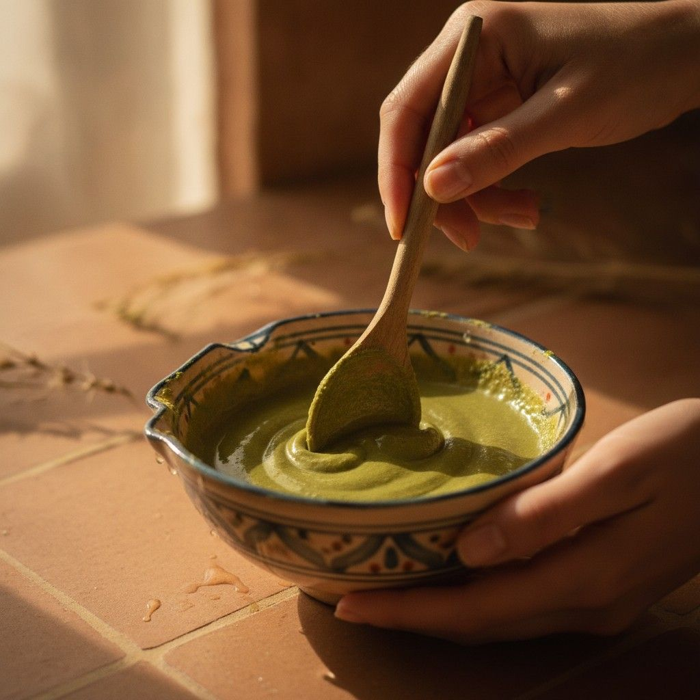

Les propos qui suivent reflètent l'expérience et l'opinion personnelles de Khuwaylid, et non une position scientifique ou religieuse établie de la rédaction — conformément à notre méthodologie éditoriale, nous distinguons ici clairement le témoignage individuel de l'information sourcée.
Qu'est-ce qui vous a poussé à fonder La Maison du Jujubier ?
« Il y a une histoire personnelle derrière ce choix. J'étais en vacances en Malaisie avec ma famille, et comme mes cheveux étaient un peu longs, j'ai décidé de me les faire couper sur place, très courts, car il faisait chaud. Je suis tombé sur un coiffeur syrien, très bon et passionné par son métier. En me coupant les cheveux, il m'a fait remarquer que mon cuir chevelu était très abîmé. Il m'a recommandé d'utiliser des shampoings doux — or je n'utilisais déjà que des shampoings doux et bio. J'ai alors décidé de ne plus utiliser aucun shampoing industriel, avec l'intuition que c'étaient les produits chimiques contenus dans ces produits qui étaient à l'origine de mon problème.
La question devenait : quel produit naturel utiliser à la place ? C'est par hasard que je suis tombé sur le sidr, que ma femme buvait en infusion à cette époque. J'ai décidé d'utiliser la poudre de sidr en shampoing, simplement mélangée à de l'eau. Depuis cette date, je n'utilise plus que le sidr. Les résultats ont été phénoménaux : après seulement deux ou trois utilisations, je n'avais plus de boutons sur le cuir chevelu, plus aucune pellicule, et je ne perdais plus mes cheveux. Au même moment, je réfléchissais à lancer un projet entrepreneurial, mais je voulais vendre un produit avec une éthique forte — pas un produit mauvais pour la santé de mes clients, ni pour la planète. J'ai décidé de commercialiser la poudre de sidr. »

D'où vient votre sidr, et qu'est-ce qui distingue une bonne poudre d'une poudre médiocre ?
« Le sidr que je commercialise vient du Maroc, plus précisément de la région d'Agadir, où l'arbre pousse naturellement depuis des centaines d'années. Les feuilles sont récoltées, séchées puis broyées en poudre très fine. Le plus délicat dans la fabrication est d'enlever toutes les micro-branches et impuretés : une bonne poudre de sidr est une poudre très fine, bien tamisée. L'odeur compte aussi beaucoup : quand on ouvre un sachet de poudre de sidr, on a tout de suite une odeur herbacée forte, que j'adore — ça sent la nature. »
Comment utilisez-vous le sidr vous-même ?
« J'utilise le sidr en shampoing pour les cheveux, tout simplement mélangé avec de l'eau, car mes cheveux sont de nature grasse. Je l'utilise sur mes cheveux deux à trois fois par semaine. Je l'utilise aussi sur ma peau une fois par semaine, le vendredi en général, sur mon visage et sur tout le corps. »
Quelle place tient la dimension culturelle et spirituelle du sidr dans votre démarche ?
« La raison principale de mon utilisation du sidr est que c'est un produit beaucoup plus efficace que les shampoings ou crèmes industriels : ce produit naturel nettoie et répare en même temps. Le bonus, c'est que le sidr a aussi une importance symbolique en islam — il est cité dans le Coran et dans des hadiths du Prophète (que la paix et la bénédiction de Dieu soient sur lui). Il est traditionnellement censé éloigner les mauvais esprits. » Pour aller plus loin sur ces dimensions religieuses et culturelles, notre article le sidr à travers le monde détaille ces usages et leurs sources.
Quel a été votre plus grand défi depuis le lancement ?
« Le défi principal est de faire connaître ce produit merveilleux au plus grand nombre. Nous n'avons pas les moyens d'un L'Oréal. »
Où voyez-vous La Maison du Jujubier dans les années à venir ?
« Avec le retour au naturel que l'on observe aujourd'hui, je pense que le sidr va exploser en popularité, car il dépasse en efficacité tous les produits industriels que j'ai essayés. Nous avons aussi décidé de vendre le produit à l'état brut et de le transformer le moins possible : dès que l'on transforme un produit, il faut généralement y ajouter des substances pour le conserver plus longtemps ou lui donner une texture plus agréable — ce que nous voulons éviter. »